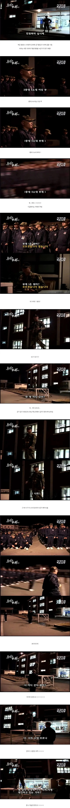

국군 다큐 찍는데 모두가 식겁했던 순간.jpg
댓글
늘어난쪽도 인원파악 못하는것도 이상한거지ㅋㅋ
대령(진) 이 중령전역한걸 본적이 있는가
무려 본인 지휘아래 민가와 우사를 박격포로 폭격한걸 나랑 행보관이 직관하면서 와 좆됐네를 내뱉은적이 있다
썰좀 더 풀어줘
별거없어 그냥 나랑 행보관이랑 의무지원가다가
행보관이 전역하고 저집옆에 땅사놓은데 집짓고 농사짓고 살거라고 흥미진진한 은퇴라이프 설명하는거
리액션 해주다가 밤10시에 눈이 멀듯한 섬광을 마주하고 암적응하고 내려다보니 완파된 우사와 반파된 민가한채를 직관함
중령 전역으로 끝난 걸 보니 사람은 안 죽었나보네
좌구산 천문대 썰도 풀고싶은데 이건 풀면 오늘밤에 자다가 잡혀갈거같음
당신 불꽃남자 김상원 아냐? 진정한 불꽃남자는 굴하지 않아.
천리행군 하다가 좌구산 천문대를 넘어갈때쯤 눈이왔는데....
단상 위 DI 뒤로 보이는 건물은 세병 1관으로 좌에서 우 순으로 당직실과 1중대 1소대 격실 입구임
진짜사나이 해군훈련소편, 박보검, 비와이가 저 생활관을 사용했음
우측은 목욕탕인데 각도상 안보이네
너가 꿀잼썰을 푼다면 나도 꿀잼썰을 풀겠다
ㄹㅇ다큐되는거 순식간이네 ㅋㅋㅋㅋ
난 그거.. 대대장인가 소장 손위에 밥떠줄때가 소름이였음
그건 인방임
그건 꽁트지 사실이 아니야
아.. 행군중에 지 소총 맡겨놓고 소총 잃어버렸다던 동기놈 생각나네..
나 진짜 저런애들 이해가 안됐음
야간에 2개 중대가 제식이동도 없이 긴급 집합하면 당연히 저런 찐빠가 일어남
그걸 방지하려고 인원수 파악을 하고 통제에 성공한 건데
미필 버러지들이 폐급이라 댓글을 다노 ㅋㅋㅋㅋ
폐급이어도 애는 착하면 용서 됨... 근데 이기적이기까지 하면 지옥임